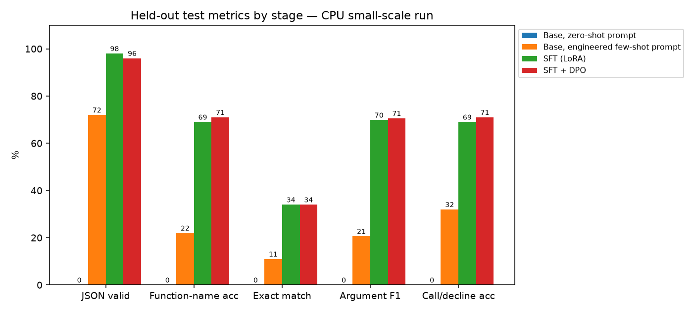
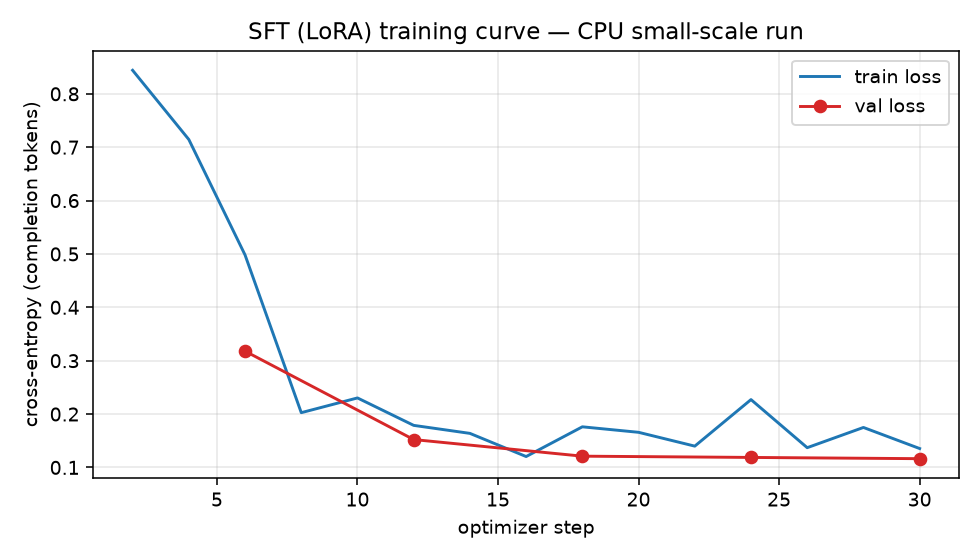
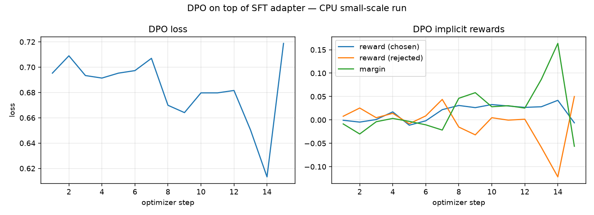

Fine-tuning for tool-call accuracy: prompt baseline → LoRA SFT → DPO
Teach a language model to pick the right function and fill its arguments correctly — or decline when no tool fits — and prove the gain over the best prompt with numbers on a held-out test set.

Headline (measured, CPU small-scale run: SmolLM2-135M-Instruct, 240 training examples, 100 held-out test examples): LoRA SFT beat the best engineered prompt on every call metric — exact match 11% → 34%, JSON validity 72% → 98%, argument F1 20.6% → 69.8%. DPO stacked on top gave no further exact-match gain (34% → 34%); it removed the remaining false declines but did not fix the SFT model's 0% decline recall. Section 6 has the full table and section 7 explains why.
Status, stated plainly
| What | Where | Executed? |
|---|---|---|
| Full pipeline (data → baseline → SFT → DPO → eval → report) at small scale | configs/cpu_small.yaml, SmolLM2-135M-Instruct, 2-core
CPU |
Yes — every number below is measured from this run |
| Strong-model reference (gpt-oss-120b via Groq, same prompt, same test examples) | src/toolcall_ft/groq_reference.py |
Yes |
| Qwen3-8B + QLoRA on an A100 / T4 | configs/gpu_qwen3_8b.yaml,
configs/colab_t4_qwen3_8b.yaml |
Ready to run on GPU, not executed here |
| Axolotl equivalents | configs/axolotl/*.yaml |
Ready to run on GPU, not executed here |
| One-click Colab notebook | notebooks/train_colab.ipynb |
Ready for a free T4, not executed here |
1. Problem
Agents fail in boring ways: they call the wrong function, invent an
argument, send "5" where the schema wants 5,
or call something when they should say "I can't do that". This
project targets exactly that single step:
input : tool schemas (JSON) + a user request
output: {"tool": "<name>", "arguments": {...}} # a tool applies
{"tool": null, "arguments": {}} # no tool applies -> decline2. Why fine-tune instead of prompting?
Fine-tuning does not make a model generally smarter; it makes it consistently good at one well-defined contract. The test for whether it is worth it is simple: build the best prompt you can, measure it, then measure the fine-tuned model on the same held-out set. If the gap is not there, don't fine-tune.
Here the baseline is a carefully engineered prompt: strict output contract, type rules, an explicit decline format, and three hand-written demonstrations (a call, a two-tool selection, a decline) that are not drawn from the dataset, so they cannot leak test answers. A zero-shot version of the same prompt is reported too.
3. Pipeline
flowchart LR
A[glaive-function-calling-v2<br/>112,960 raw chats<br/>pinned revision] --> B[parse first turn<br/>validate schema + gold call<br/>dedupe, cap per tool]
B --> C[add tool-swap negatives<br/>20% 'no tool applies']
C --> D[(train 3,000<br/>val 400<br/>test 600)]
D --> E0[Phase 0: baseline<br/>base model + few-shot prompt]
D --> E1[Phase 1: SFT<br/>TRL SFTTrainer + PEFT LoRA/QLoRA<br/>loss on the JSON only]
E1 --> F[sample 4 outputs / prompt<br/>from the SFT model]
F --> G[auto-label chosen / rejected<br/>with the task scorer]
G --> E2[Phase 2: DPO<br/>TRL DPOTrainer<br/>stacked on the SFT adapter]
E0 & E1 & E2 --> H[same scorer on held-out test<br/>JSON validity, exact match,<br/>tool acc, argument F1, refusal]
H --> I[report: table + curves]
4.
Dataset card (short version — full card in data/DATA_CARD.md)
- Source:
glaiveai/glaive-function-calling-v2@e7f4b64, Apache-2.0. (Salesforce/xlam-function-calling-60kwas the first choice but is gated.) - Cleaning: 112,960 raw records → drop no-tool prompts (34,598), duplicates (44,314), clarifying-question turns (25,520), unparseable calls (1,663), invalid gold calls / schemas (≈450) → 6,217 unique calls + 217 natural declines → cap 40 per tool → 4,000 examples (3,200 calls, 217 natural declines, 583 synthetic tool-swap negatives).
- Splits: 3,000 / 400 / 600, stratified, 20% declines in each, no query shared across splits (asserted).
- Gold-label validation: the called tool must exist, required args present, no unknown args, JSON types and enums respected — 39 gold calls failed this and were dropped.
5. Metrics
All computed by one scorer (src/toolcall_ft/scorer.py,
unit-tested):
| Metric | Definition |
|---|---|
| JSON valid | output is exactly one JSON object {"tool", "arguments"}
(code fences tolerated, prose is not) |
| Exact match | right tool and the full argument dict (case/whitespace-insensitive strings, 5 == 5.0) |
| Function-name acc | right tool name (null == null counts) |
| Argument F1 | micro-F1 over (key, value) pairs on examples whose gold is a call |
| Call/decline acc ("refusal correctness") | the call-vs-decline decision is right; invalid output counts as wrong |
| Decline recall / False-decline rate | declines on gold-decline examples / declines on gold-call examples |
6. Results — CPU small-scale run (measured)
Setup actually executed: SmolLM2-135M-Instruct, LoRA r=16 on all attention + MLP projections (4.88M trainable parameters, 3.5% of 139M), 240 training examples (1 epoch, effective batch 8, 30 optimizer steps), 24 validation examples, evaluated with greedy decoding on the first 100 examples of the held-out test split (74 gold calls, 26 gold declines). Every stage — and the gpt-oss-120b reference — is scored on exactly those 100 ids by the same scorer. This is a small-scale CPU run that proves the pipeline end to end; it is not the Qwen3-8B result the GPU configs are built for.
| Stage | n | JSON valid | Function-name acc | Exact match | Argument F1 | Call/decline acc | Decline recall | False-decline rate |
|---|---|---|---|---|---|---|---|---|
| Base, zero-shot prompt | 100 | 0.0% | 0.0% | 0.0% | 0.0% | 0.0% | 0.0% | 0.0% |
| Base, engineered few-shot prompt | 100 | 72.0% | 22.0% | 11.0% | 20.6% | 32.0% | 11.5% | 43.2% |
| SFT (LoRA) | 100 | 98.0% | 69.0% | 34.0% | 69.8% | 69.0% | 0.0% | 4.1% |
| SFT + DPO | 100 | 96.0% | 71.0% | 34.0% | 70.6% | 71.0% | 0.0% | 0.0% |
| Reference: gpt-oss-120b (Groq API), few-shot | 100 | 100.0% | 99.0% | 92.0% | 93.6% | 99.0% | 100.0% | 1.4% |
(results/cpu_small/results_table.md, raw numbers in
metrics_*.json, every prediction in
predictions_*.jsonl.)
What the numbers say
- SFT is the big win. Against the best prompt for the same model, LoRA SFT on just 240 examples took JSON validity from 72% to 98%, exact match from 11% to 34% (3.1×), function-name accuracy from 22% to 69%, argument F1 from 20.6% to 69.8%, and cut the false-decline rate from 43.2% to 4.1%. The zero-shot base model produced no valid output at all (it echoed the schema or wrapped JSON in prose), which is why the few-shot prompt is the real baseline.
- SFT never learned to decline. Decline recall is 0/26 even though 47 of the 240 training examples (19.6%) are declines: the fine-tuned model always calls something. Most of its "Call/decline acc" errors are exactly those 26 cases.
- DPO gave no exact-match gain at this scale — stated plainly. 79 of 100 predictions are byte-identical to SFT. Net changes: false declines 3 → 0, function-name accuracy +2 points, argument F1 +0.8 points, but two outputs that were valid JSON became invalid — both repetition loops cut off at the token limit, one of them previously an exact match. So JSON validity fell 98% → 96% and exact match stayed at 34%. On 100 examples a 2-point move is two examples, so none of these SFT→DPO differences is statistically meaningful.
- Why DPO moved the needle the way it did. The scorer-labelled pairs came from 32 fresh training prompts × 4 samples (temperature 1.0) of the SFT model: 29 pairs, 14 of them gold-anchored (no sample was exact). 16 of the 29 rejected answers were invalid JSON and 8 were false declines, but only 2 pairs had a decline as the chosen answer. So the preference data taught "don't decline when a tool fits" (false declines did go to 0) and gave almost no signal for "decline when nothing fits" — the SFT model's real weakness. The fix is in the data, not the optimizer (see Future work).
- The gap to a frontier model is still large (34% vs
92% exact match). Of gpt-oss-120b's 8 misses, 7 are dataset label
conventions (empty-string fillers, invented defaults, dates frozen in
2022), not model errors — see
results/cpu_small/groq_error_analysis.md. Fine-tuning learns those conventions; prompting cannot.
Training curves

SFT: completion-only cross-entropy fell from 0.844 (step 2) to 0.135
(step 30); validation loss 0.318 → 0.152 → 0.121 → 0.119 → 0.116 at
steps 6/12/18/24/30, with validation token accuracy 90.7% → 96.0%.
Validation loss kept falling and never turned up, so one epoch did not
overfit. (Steps 21–30 ran after resuming from checkpoint-20
when the sandbox rebooted.)

DPO (β = 0.1, LR 5e-5, effective batch 2, 15 steps, 420 s): the loss starts at ln 2 ≈ 0.693 as expected when the policy equals the reference, and the chosen-vs-rejected margin grows to +0.16 by step 14 (loss 0.613). Step 15 is a single leftover pair, so its spike is noise. Margins this small mean the policy barely moved from the SFT reference, which matches the 79/100 identical predictions.
Compute: 2 vCPU aarch64, 7.8 GB RAM, no GPU. SFT ≈ 48 min wall-clock in total (steps 1–20 ≈ 21 min, steps 21–30 ≈ 28 min under heavy CPU steal), sampling for DPO pairs 33 min, DPO training 7 min, each 100-example evaluation ≈ 10–18 min.
7. What went wrong and how I iterated
Every item below actually happened during this project; the fix is in the code or config.
| # | What went wrong | What I saw | What I changed |
|---|---|---|---|
| 1 | First-choice dataset was gated | Salesforce/xlam-function-calling-60k returned HTTP 401
from a script |
Switched to glaiveai/glaive-function-calling-v2, pinned
to a commit hash, and wrote a stricter parser/validator because glaive
is messier (single-quoted arguments strings,
clarifying-question turns, invalid gold calls) |
| 2 | Messy labels | 25,520 first turns were clarifying questions, 1,663 calls had unparseable arguments, 39 gold calls violated their own schema | Dropped all three classes rather than "fixing" them; per-tool cap of 40 so loan/BMI/password generators don't dominate (see the data card) |
| 3 | Too few natural declines (217) for a meaningful refusal metric | Refusal correctness would rest on a handful of examples | Added tool-swap negatives: real requests paired with tools
from a different example, labelled {"tool": null}; 20%
declines in every split |
| 4 | Out of memory on a 7.8 GB shared CPU box | Qwen2.5-0.5B-Instruct SFT was OOM-killed | Moved the executed run to SmolLM2-135M-Instruct; kept Qwen3-8B QLoRA as the GPU config |
| 5 | Still OOM-killed during SFT | Full-vocab (49k) logits for micro-batch 2 × 640 tokens dominated RAM | Micro-batch 1 + gradient accumulation 8 (same effective batch), non-reentrant gradient checkpointing, frozen base held in bf16 during training only |
| 6 | Kills mid-run lost work | Each OOM/reboot restarted evaluation and training from zero | Made every stage resumable: eval writes a per-chunk cache, SFT/DPO
save LoRA checkpoints and resume from the last one, the pipeline skips
stages whose artefact exists, and a supervisor loop re-launches it. SFT
in this run really was resumed from checkpoint-20 after the
sandbox rebooted |
| 7 | Decoding was pathologically slow | Profiling showed ~80% of forward time inside PyTorch's CPU SDPA kernel on this aarch64 box | attn_implementation: eager |
| 8 | bf16 decoding was slower than fp32 on CPU | Timed both | Evaluate in fp32, train with a bf16 frozen base; generation stops
per row as soon as the JSON object closes instead of always running
max_new_tokens; LoRA merged into the base weights for
inference |
| 9 | Zero-shot looked like 0% across the board | The base model echoed the schema
("parameters": {"type": "object", ...}) or wrapped JSON in
prose |
That is the honest zero-shot number; it is why the engineered few-shot prompt is the real baseline to beat |
| 10 | Groq free-tier rate limits on the strong-model reference | A full 600-example run was not practical | Ran it on the same 100 test examples as the local stages, with retry/backoff and a resumable prediction cache |
| 11 | The strong model "failed" on dataset quirks | gpt-oss-120b missed 8/100 exact matches | Read all 8: 7 are label conventions (empty-string fillers, invented
defaults, the year 2022), not model errors — documented in
results/cpu_small/groq_error_analysis.md |
| 12 | CPU time budget for DPO | After a reboot the shared host ran with ~40–50% CPU steal; SFT steps went from ~50 s to ~2–4 min and evaluating 100 examples took ~25 min | Cut DPO from 64 to 32 prompts (still 4 samples each, scorer-labelled → 29 pairs) and used effective batch 2 so the run still has 15 optimizer steps; the GPU configs use 1,000 (A100) / 300 (T4) prompts |
| 13 | DPO crashed on start-up:
KeyError: "attribute 'train' already exists" |
I had named the trainable copy of the SFT adapter
"train"; PEFT registers adapters as sub-modules, and
train is already a method on every
nn.Module |
Renamed the adapters policy / reference
(TRL's model_adapter_name /
ref_adapter_name) |
| 14 | The sandbox rebooted twice — once mid-SFT, once with the SFT+DPO evaluation at 96/100 | Processes and /tmp (including the virtualenv) were
wiped |
Virtualenv moved to persistent storage with a one-command rebuild script; thanks to item 6 the SFT resumed from step 20 and the evaluation finished only the last 4 examples |
| 15 | DPO did not improve exact match | 79/100 predictions identical to SFT; false declines 3 → 0 but 2 outputs became invalid JSON | Diagnosed rather than tuned for the test set: the automatically labelled pairs almost never had a decline as the chosen answer (2 of 29), so DPO had nothing to teach about the SFT model's real failure (0% decline recall). Reported as is; the fix belongs in pair construction (Future work) |
Lessons I'd keep: measure the prompt baseline first (the zero-shot 0% would have made any fine-tune look miraculous); make every long CPU/GPU job resumable from day one; and inspect the preference pairs before training on them — their composition predicted the DPO outcome better than the loss curve did.
8. Reproduce
# CPU (what was run here)
make install # CPU torch wheel + pinned deps
make data # downloads the pinned raw file (~271 MB) and rebuilds data/processed
make pipeline CONFIG=configs/cpu_small.yaml
make test lint
# GPU, Qwen3-8B QLoRA (not executed here)
make install-gpu
make pipeline CONFIG=configs/gpu_qwen3_8b.yaml
# optional strong-model reference (needs GROQ_API_KEY)
make groq CONFIG=configs/cpu_small.yaml- Colab: open
notebooks/train_colab.ipynbon a free T4; it runs the same modules withconfigs/colab_t4_qwen3_8b.yaml(orcolab_t4_small.yamlfor a quick run). - Axolotl:
python -m toolcall_ft.export_axolotlthenaccelerate launch -m axolotl.cli.train configs/axolotl/sft_qwen3_8b_qlora.yaml(and the DPO YAML afterbuild_dpo_pairs). - Logging: TensorBoard by default
(
outputs/<run>/tb), CSV + JSON curves inresults/<run>/, PNG plots viamake report. Addwandbtoreport_toin the YAML for Weights & Biases. - Reproducibility: every stage is config-driven
(YAML), seed 42 everywhere (data split, sampling, trainer), dataset
pinned to a revision, versions pinned in
requirements.txt. Stages are resumable (eval caches, trainer checkpoints), which mattered here — see section 7.
Repository layout
configs/ cpu_small (executed) · gpu_qwen3_8b · colab_t4_* · axolotl/
data/processed/ train/val/test JSONL + stats.json (committed, ~3 MB) data/DATA_CARD.md
src/toolcall_ft/ data · prompts · scorer · evaluate · train_sft · build_dpo_pairs · train_dpo · report · groq_reference · export_axolotl
scripts/ run_pipeline.sh (resumable end-to-end runner)
results/cpu_small/ metrics_*.json · predictions_*.jsonl · *_curve.csv · plots/*.png · results_table.md
notebooks/ train_colab.ipynb
tests/ data processing + scorer (pytest)
outputs/ adapters, checkpoints, TensorBoard (git-ignored)9. Future work
- Run the GPU config for real.
configs/gpu_qwen3_8b.yaml(Qwen3-8B, 4-bit QLoRA r=16, the full 3,000-example train split for 2 epochs, 1,000 DPO prompts, the full 600-example test set) is the version that answers the actual question; the CPU run only proves the pipeline end to end.colab_t4_qwen3_8b.yamlis the free-T4 variant. Neither has been executed, so no numbers are claimed for them. - Clean the labels before training, not just the outputs. The Groq error analysis shows exact match on glaive partly measures agreement with dataset quirks (empty-string fillers, invented defaults, the year 2022). Next step: drop empty-string arguments, drop gold arguments that are not in the request, and re-date relative dates, then re-score every stage on the normalised test set alongside the raw one.
- Better preference data, aimed at the measured
failure. The SFT model never declines (0/26), yet only 2 of 29
DPO pairs had a decline as the chosen answer. Next run: oversample
gold-decline prompts when building pairs, add (gold decline ≻ the
model's confident call) pairs for every tool-swap negative, and use more
prompts and 8+ samples per prompt. Both outputs that DPO turned invalid
are repetition loops (
[5, "cube", 5, "cube", ...], a run of zeros) cut off at the token limit; adding an SFT term to the DPO loss (TRL'srpo_alpha) is the standard guard against that drift. - Fix the SFT decline gap directly. Upweight or oversample declines in SFT, or add a short "no tool fits" rationale token, and check decline recall on the validation set during training rather than only at the end.
- Try the alternatives to plain DPO that TRL already
ships: IPO /
loss_type="robust"for noisy automatic labels, KTO (works from single good/bad labels, no pairs needed), and ORPO (SFT + preference in one stage). - Constrained decoding as a baseline. Grammar/JSON-schema-constrained generation (e.g. Outlines or llama.cpp grammars) fixes JSON validity without training; the honest comparison is fine-tuned vs. constrained prompting vs. both.
- Multi-turn and parallel calls. This project scores one decision per example. Real agents need the follow-up turn after a tool result, parallel calls, and clarifying questions (dropped here as ambiguous).
- Confidence intervals. With 100 test examples a 1-example change is 1 point; bootstrap CIs over the full 600-example test set (GPU run) would make stage-to-stage differences defensible.
- Serve it. Merge the adapter, export to GGUF, and put it behind the same function-calling interface the agent project uses, so the latency/quality trade-off vs. a hosted model can be measured.
License
MIT © 2026 Rakesh Burla. The processed data is derived from glaive-function-calling-v2 (Apache-2.0).